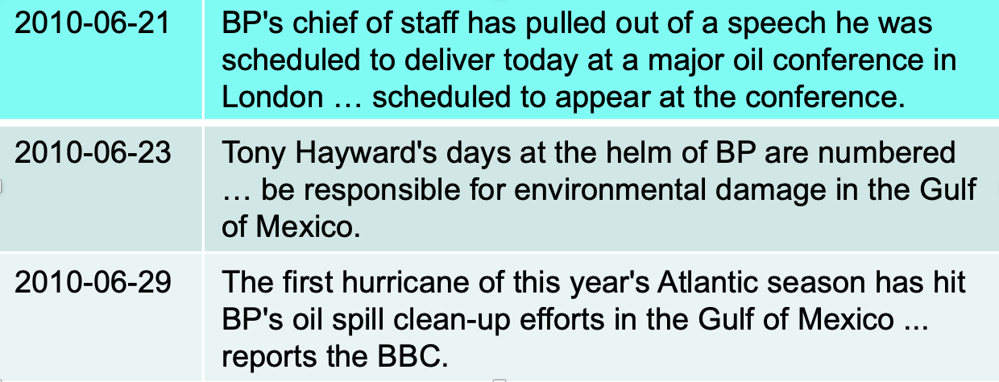
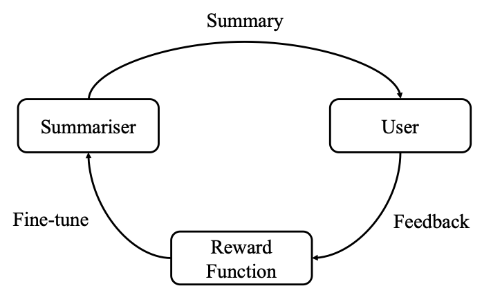
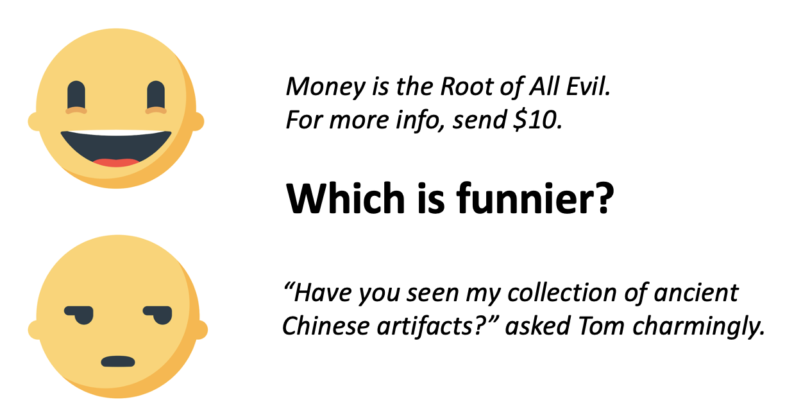
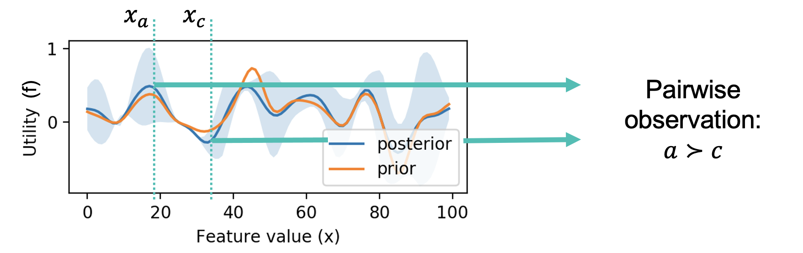
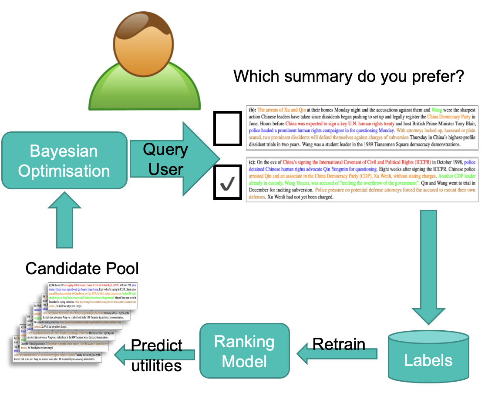
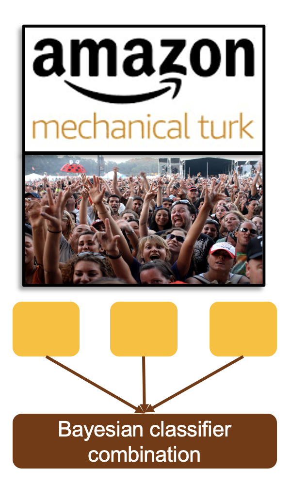
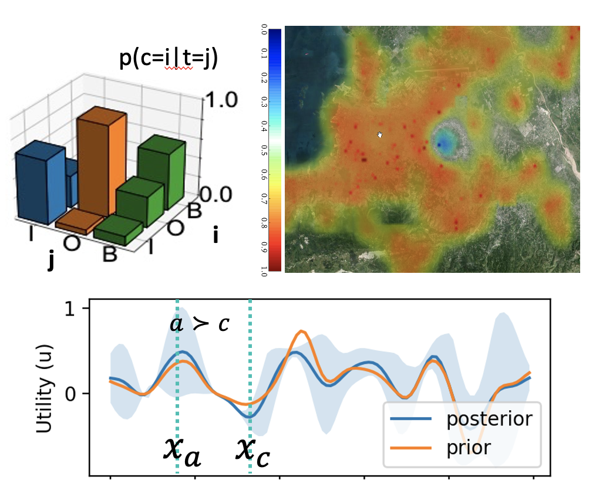

Below you will find a selection of the topics we have been working on recently. This page is a work in progress and not everything we do is covered here, so please get in touch with individual group members to find out more about their work.
Dataset Labelling Platform
Github A simple web tool for annotating text datasets. For more information, please contact Luke Gassmann.Timeline Summarisation
When a chain of events unfolds over several days, it can be difficult to get an overview of what happened, when. Timeline summarisation processes multiple articles, detects individual events, and constructs a timeline about a particular news topic. We have developed an interactive approach, which allows users to specify keywords of interest and express preferences over different summaries, then learns to meet the user's needs.

Software:
Selected papers:
NLP for Healthcare
Clinical notes aim to record key observations and diagnoses made during a medical consultation. However, creating the notes can often interrupts doctors in their work, as they need to pause a conversation to type or look up information on a particular condition. We are working with GPs to develop tools that help them to take high quality notes during consultations. NLP tools can also provide enhancements to other areas of health and wellbeing: with Squiboon, we are developing a conversational assistant to facilitate conversations among older adults to help carers, housing providers, and improve connections within a community.
Selected papers:
Project link
UKRI Healthy Ageing ChallengePreference Learning
Is this joke funny? Is your argument convincing? Is this summary any good? When considering these qualities, it's hard to make a categorical decision, but often easier to make a comparative judgement: which joke is funnier, which arugment is more convincing, or which summary is more helpful. Our Bayesian preference learning methods enable learning from sparse and noisy pairwise comparisons. By using Bayesian optimisation to carefully select the most informative comparisons, we can reduce the amount of questions we have to ask a user to learn their preferences down to a handful. 
Software:
Github -- Interactive rankingGithub -- GPPL Preference learning
Selected papers:
- Interactive Text Ranking with Bayesian Optimisation: A Case Study on Community QA and Summarisation
- Scalable Bayesian Preference Learning for Crowds
- Predicting Humorousness and Metaphor Novelty with Gaussian Process Preference Learning
- Finding Convincing Arguments Using Scalable Bayesian Preference Learning
Aggregating Annotations: Bayesian Combination
Annotated data is needed for training and evaluating machine learning models, but where do the labels come from? Often, humans are required to label examples from a dataset, particularly when working with language data. Expert labellers are expensive, so a typical approach is a crowdsourcing -- asking untrained people to annotate the data. This is prone to errors. Our work on Bayesian combination methods can mitigate these errors, allowing us to obtain reliable labels from noisy annotations.
Software:
GithubSelected papers:
- A Bayesian Approach for Sequence Tagging with Crowds
- Low Resource Sequence Tagging with Weak Labels
- Dynamic Bayesian Combination of Multiple Imperfect Classifiers